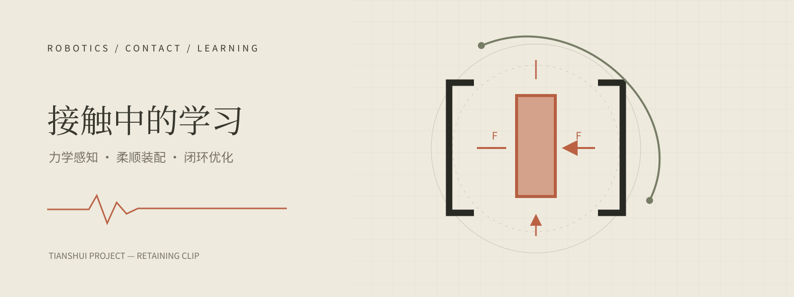
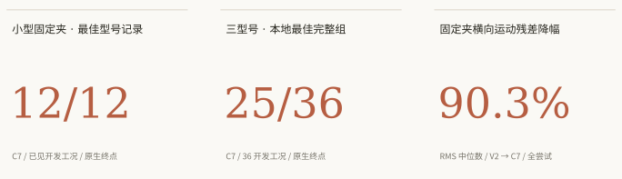
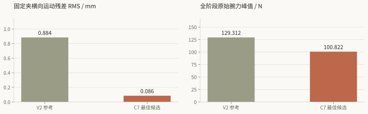

天水项目固定夹装配：
接触感知、柔顺控制与残差学习的算法设计及验证
Tianshui Project — Retaining Clip Assembly:
Contact-Aware Compliant Control, Residual Learning and Validation

摘要
固定夹装配要求机器人在几何误差、摩擦和多点接触下完成插入，并将工件的定位与承载责任转移给工装。任务的困难不止于到达目标位置，还包括接触后保持稳定推进、解除抓持时避免拖带，以及机器人退出后的独立保持。本文面向天水项目的大、中、小三型固定夹，提出 PACE（进度感知的接触执行框架），将状态估计、阶段管理、离散导纳、受约束执行和有界残差学习连接为完整装配闭环。型号差异由几何、抓持与负载配置表达；算法使用相同的观测接口和控制流程，覆盖接近、插入、卸载、松爪、回撤与稳定验收。
方案围绕执行一致的进度调度、置信度约束的接触残差、面向释放终点的动作规划展开。方法部分给出模块输入输出、坐标与时间约定、控制公式、历史观测结构、奖励与终止语义、在线控制和训练伪代码，并进一步描述算法从仿真验证走向真实设备的过程。验证链从真实接口与参数测量出发，通过限制仿真中的可用信息、加入驱动和传感器非理想因素、进行日志回放及硬件在环，逐步进入低载接触、策略小幅接管和完整任务验收。其目的在于使仿真筛选出的动作在真实系统中具备相同的信息来源、执行含义和约束条件。
现阶段已在三型固定夹上完成装配动作演示，并形成同条件开发实验依据。最佳候选 C7 在小型开发子组取得 12/12（100%）原生成功；在三型共 36 个开发工况中取得 25/36（69.4%），相对本地 V2 提升 19.4 个百分点。同组全部尝试的固定夹横向运动残差 RMS 中位数下降 90.3%（0.884 → 0.086 mm），原始腕力峰值中位数下降约 22.0%。这些结果显示，执行约束与进度协调能够同时改善开发工况下的装配表现和运动平稳性，并为 PACE 的结构设计提供依据。上述成绩来自历史控制方案的原生仿真协议；完整释放、回撤稳定、新工况泛化及真机闭环是后续验证目标。
关键词：固定夹装配；接触状态估计；导纳控制；受约束执行；残差强化学习；仿真验证；真实设备迁移
1. 研究问题与场景
1.1 固定夹装配为什么是接触交接问题
天水项目研究机器人将固定夹插入工装、释放并撤离的过程。机器人通过末端夹爪抓持工件，工装提供槽位与最终位置约束。开始时固定夹的运动由夹爪控制；插入过程中，夹指和工装同时施加约束；完成后则由工装保持固定夹，机器人不再提供支撑或牵引。因此，一次完整装配实质上是定位和承载责任的转移。
“末端到达目标”和“工件装配完成”不是同一个事件。末端位置正确时，固定夹可能仍有滑移或横向偏差；工件短暂到位时，也可能尚未摆脱夹指支撑，松开或退出后才发生偏移。算法必须同时处理机器人运动、接触状态和工件保持，不能只优化一条末端轨迹的终点误差。

同一次装配，两个观察尺度
上：机械臂全景 下：固定夹侧面
三型固定夹分别对应 lab1、lab2、lab3。尺寸、抓持偏心和插接局部几何会改变受力与退出空间，因此型号必须进入任务配置与结果分解。本文使用这些物理差异定义上下文，而不是为每型设计互不相干的控制程序。


1.2 研究难点与方法要求
接触前的定位误差，会在插入后转化为横向载荷和摩擦阻力。力反馈可以使机器人退让，但过强增益、滤波延迟、驱动迟滞和内部目标累积也可能造成“接触—退让—再接触”的振荡。另一方面，降低输出变化率虽然改善平滑性，却会延长实际推进；若状态机仍用原来的固定帧数切换，便可能在尚未落座时进入卸载。释放阶段进一步引入夹指行程、腕姿可达性和工件保持的问题，单独优化插入动作无法消除这些耦合。
| 研究问题 | 算法需要具备的能力 | 对应可观察量 |
|---|---|---|
| 入口误差与局部接触不确定 | 几何参考、有界搜索、横向与姿态柔顺 | 工件相对槽位误差、方向性力矩、实际进度 |
| 力反馈可能放大振荡 | 带时钟和量纲的导纳、因果滤波、反饱和 | 原始/补偿力、请求与实测、延迟及能量变化 |
| 内部目标与执行进度分离 | 以实测状态管理阶段和时间预算 | 指令跟踪差、工件与末端进度、停滞持续时间 |
| 松爪和回撤破坏落座 | 交接路径预检、腕臂夹指协同、独立保持观察 | 实测开度、工件跟随、回撤距离、稳定窗口 |
| 仿真中有真机不存在的信息 | 可部署观测接口、估计置信度与特权信息隔离 | 每个在线信号的真实来源、年龄、失效处理 |
本文集中回答两个问题：怎样把这些要求组织成可复现的控制与学习方法；怎样用仿真证据逐步支持真实设备上的验证。已有实验的意义在于检验局部假设和收缩设计空间，而不是直接证明完整新方案已经成立。
1.3 成功与失败在画面中意味着什么
上游 V2 中型录像提供了一个直观例子：成功标签样例的最终位置误差范数约 0.857 mm；失败标签样例约 2.354 mm，其中 Z 残差仅 0.01 mm，主要偏差在 X 方向。两条记录都出现 seat 标记。这说明“看起来已经插到底”和“状态机进入落座分支”都不能单独代表任务完成。数值来自来源索引，不是从像素估计。
相同观看时段，不同末态
上：成功标签 下：失败标签这两条录像不是同初态配对实验，来源索引也没有给出明确的失败原因。它们帮助读者理解要观察的对象关系；因果分析需要第 4 章中的同条件轨迹和受力数据。动态图、实验曲线与独立评价各自回答不同问题，三者共同构成对装配过程的理解。
2. 任务建模与系统接口
2.1 状态、坐标与可用信息
将机器人关节位置和速度记为 q、q̇，末端位姿为 TBE，固定夹位姿为 TBC，目标工装为 TBT，夹指间距为 g，腕部 wrench 为 w=[f,τ]。B、E、C、T 分别表示机器人基座、工具、固定夹和任务坐标系。TAB 将 B 系坐标变换到 A 系，所有程序和日志使用同一约定。任务系正 Z 指向插入方向，真实世界是否向下由 TBT 决定，不写死在控制律里。
完整物理状态还包含接触、摩擦、抓持关系和可能的柔性变形，而部署控制只能读取部分状态。用 ok 表示带时间戳的传感器观测，用 x̂k 及不确定度表示估计。仿真真值可供训练 critic 和独立评价使用；在线策略、阶段切换和恢复都应使用与真机对应的观测或估计。尤其在松爪后，固定夹不再刚性依附末端，不能继续由 FK 直接替代其位姿。
xk+1 = F(xk, uk, c, ηk)
ok = H(xk−d) + νk
x̂k = Estimator(o0:k, u0:k−1, c)
uk = Executor(Controller(x̂k, modek, c))这里 c 为任务和物体配置，η 表示未建模动力学，ν 为测量误差，d 表示延迟。该表达并不要求精确学习 F，而是提醒我们：观测、控制请求和实际作用之间都存在需要验证的环节。控制器的内部积分状态、阶段预算和上一动作也会影响未来，因此必须进入日志和训练状态定义。
2.2 操作流程与交接责任
完整流程从已确认的粗定位/预抓取交接开始，依次完成接近对准、柔顺插入、落座卸载、松爪脱离、回撤和独立稳定。当前实验场景从已经抓住固定夹的状态开始，尚不覆盖散乱来料识别和自主抓取。该范围决定了本报告的控制设计与周期起点；前端抓取可以作为后续系统扩展，但不能被计入已实现能力。


接近入口与插接

松爪与退出

两幅 GIF 均从既有 5× 状态回放裁切，10 帧/秒抽帧，未做运动平滑或插帧；短循环方便定位动作，振幅、速度及稳定性仍需核对原始轨迹。可分别暂停。
各阶段共享一个完整任务预算。插入耗时增加时，后续开指与回撤仍需要真实执行时间，不能让整体评价在较早的状态机终点截断；机器人到达回撤距离后，工件仍需独立稳定保持。过程中的保护失败和缺测也是任务结果，不能从成功率分母中排除。
2.3 目标函数与完整成功条件
算法首先追求完整任务可行，再在质量约束内减少周期和无效运动。最终成功不是一个末帧误差判断，而是多个必要条件的合取：固定夹位姿达到要求、抓持解除、实测回撤充分、稳定窗口完整、全历史质量合格，并且未出现保护失败或超时。
complete_pass = seated ∧ detached ∧ withdrawal_ok
∧ independent_stable ∧ quality_ok ∧ timing_ok ∧ data_valid
目标：提高 P(complete_pass)，并降低完整周期及失败载荷代价现有任务要求保留 2 mm 装配位置、至少 100 mm 回撤和一秒独立稳定，以及 5 mm 跟踪保护等约束。历史追加终点评价进一步采用位置误差峰值 ≤2 mm、角度误差峰值 ≤1°、平移速度 RMS ≤2 mm/s、角速度 RMS ≤0.02 rad/s、位置包络三维范数 ≤0.5 mm；60 Hz 下以 61 个样本构成一秒差分窗口。这些定义为验证设计提供已有参照，完整九项质量和真机安全阈值仍需按冻结协议与标定来源处理。任务要求、追加终点实现
九项质量覆盖接触/释放的峰值力与力矩、插入力积分、横向路径、实测加速度、释放回弹和策略动作变化率。指标不能互相替代：低峰值可能伴随长时间摩擦，平滑命令可能没有实际完成动作。第 4 章展示的历史原生成功只覆盖其原协议条件，不被更名为式（2）的完整成功。
3. 算法方案：PACE 接触执行框架
以实测进度协调接触控制，以观测可信度约束学习权限，以工件独立保持定义任务完成。
3.1 设计依据与总体架构
本文将该设计称为 PACE（Progress-Aware Contact Execution，进度感知的接触执行框架）。核心问题是：当接触、限速或驱动迟滞使动作变慢时，如何让阶段切换、学习修正和释放动作仍对应同一个真实物理状态。PACE 把固定夹装配表示为受接触约束的闭环操作：先估计机器人与固定夹的相对状态，再根据任务阶段产生名义运动，通过柔顺反馈处理接触，由受限学习残差补偿未建模误差，最后把请求转换为可执行的关节和夹指动作。落座、松爪、回撤与稳定观察属于同一条任务链。控制器从接近入口开始就考虑后续退出空间，避免到释放时才发现当前腕姿和夹指位置不支持安全撤离。
这一结构的选择来自两类依据。已有实验中，输出投影降低了固定夹横向运动残差，按实测进度分配插入时间挽回了部分失败，回撤诊断又表明仅有末端运动并不能保证工件保持。因此，执行约束、阶段交接和物体估计必须共享状态。文献方面，Hogan 对交互动力学的讨论说明位置与力不能被孤立设计；残差强化学习工作将可建模部分交给反馈控制，将难以准确建模的接触修正交给学习。L1、L2 本文在这些原则上提出下述组合，具体的观测接口、状态机和约束设计仍需按第 4 章的试验路线验证。

三个相互衔接的设计重点
① 执行一致的进度调度。 限幅或柔顺退让会改变实际推进速度，因此阶段管理同时读取工件进度、末端进度和执行偏差，只在物理进度成立时更新预算。它要解决的是“内部轨迹已到位、工件仍未落座”的时间错配。对应的可检验假设是：在相同总预算下，相比固定计时，它能减少提前交接，同时不增加超时与载荷代价。C2/C7 的案例是局部依据，完整验证仍需隔离其他改动。
② 置信度约束的接触残差。 学习修正同时受阶段、观测新鲜度和实际可执行边界约束；相机遮挡或抓持估计退化时，策略不能继续放大基于旧状态的动作。该设计将“能看见什么”和“允许修正什么”联系起来。验证时应在同一基础控制上比较有无质量门控，测量失配观测下的载荷、失败和实际残差贡献，而不只看平均奖励。
③ 面向交接终点的动作规划。 插入阶段就检查张开夹指后的退出空间，随后把卸载、开指、让位和回撤组织为有观测反馈的连续过程。它要解决的是“插入成功、退出破坏结果”的局部最优。对应验证应同时比较工件保持、实测回撤、全程质量与完整周期，而不能仅奖励机器人离开目标。
这三个重点构成本文提出的系统设计贡献；导纳、残差强化学习和约束优化本身均有已有研究基础。其价值应由消融与完整任务实验检验，本文不据此宣称方法首创或已经优于现有控制器。当前证据覆盖范围见实验位置图。
系统的最终输出是机器人关节位置或速度命令、夹指开度命令、执行有效标记和任务结局。中间的“末端目标”只是一项请求，必须经过运动学求解和执行确认，不能直接作为已完成动作。本文采用外层导纳配合机器人已有位置/速度伺服的接口假设；若真机仅开放另一类命令，需要重新辨识对应的内环响应，不能把下述参数原样套用。
| 模块 | 输入 | 输出 | 最关键的责任 |
|---|---|---|---|
| 任务配置 | 目标槽位、固定夹几何、抓持变换、标定与设备限值 | 任务坐标、名义路径、归一化尺度、退出走廊 | 把型号差异写成有物理意义的数据 |
| 观测与估计 | 编码器、腕部六维力、夹指状态、可选且已声明的视觉估计 | 带时间戳和置信度的状态、接触证据 | 说明哪些量可观测、哪些量只是推断 |
| 阶段管理 | 估计状态、实际进度、预算、失败事件 | 当前模式、交接条件、有限恢复请求 | 不以帧数或命令到位冒充物理事件 |
| 名义控制与导纳 | 模式、任务误差、补偿外力 | 末端速度请求与夹指参考 | 形成可解释的零残差基线 |
| 残差策略 | 历史观测、几何上下文、前次执行动作 | 有界的六维速度修正 | 补偿局部接触误差，不改写验收和硬限制 |
| 约束执行 | 总速度请求、关节状态、设备约束 | 经过检查的关节/夹指命令、投影差 | 处理饱和、不可达和时延 |
| 独立评价 | 保存的完整时间序列、冻结协议 | 成功、质量、周期及失败原因 | 在控制器之外复核任务是否真正完成 |
3.2 任务配置与三型号适配
大型、中型和小型使用同一套程序、阶段定义和策略权重。配置文件提供槽口坐标、工件尺寸、目标插入深度、抓持变换、工具负载、夹指实际行程，以及由几何检查得到的退出走廊。控制器可以读取这些差异，因为它们改变真实约束；不允许根据已经看到的成败给每个 case 添加隐藏补偿。
任务坐标系 T 的正 Z 轴定义为插入方向，X、Y 为横向。部署时目标位姿由工装标定和任务指令给出；固定夹相对夹爪的初始变换由抓取定位或经过核验的交接状态给出。更换型号时，主要变化应当来自这两组变换和几何参数。若历史上需要某型号固定偏移，应先检查工具坐标、抓持偏心和目标槽位的标定，确认偏移确有测量依据后才进入配置，而不是把误差吸收到网络或控制增益中。
定义几何上下文 c 为八个可测标量：固定夹宽、高、厚、插入深度、抓持负载质量、负载质心至力传感器的距离，以及 X/Y 名义间隙。完整的质心向量、惯量和碰撞几何仍由模型配置保存，八维向量只是策略的低维上下文。间隙为零、负值或无法可靠估计时，不直接用于除法；归一化尺度使用独立规定的正下界，并把该情况作为配置审查项。
对位姿误差、速度与力矩采用量纲一致的归一化：平移按任务容差或标定尺度，旋转按弧度范围，力按相应工艺限值，力矩按限值或特征长度乘力限值。这样，相同的网络输出表示相似的相对修正强度；但 2 mm 装配要求、100 mm 回撤要求等验收数值仍保持物理单位，不随尺寸归一化而改变。
3.3 传感器处理、时钟与接触状态估计
在线状态以同一单调时钟组织。每个消息包含采样时间、接收时间、序号、单位、参考系和有效标记；控制周期读取最新可用数据，但不会把旧力样本当成当前接触。编码器和力传感器的时延通过已知运动或轻触实验估计，视觉只做基于过去消息的更新。离线双向平滑、未来帧信息和回看后的阶段标签不能进入在线特征构造。
腕力首先进行零偏、重力和负载偏心补偿，再变换到任务坐标系。令传感器测得的 wrench 为 wS=[fS,τS]，O 为导纳控制点（工具参考点），p 为 O 到传感器原点的向量、以 T 系轴向表达，R 为 S 到 T 的旋转，则：
w̃S = wS − bS − wgravity,S − ŵinertia,S
fT = R w̃S,force
τT = R w̃S,torque + p × fT式（3）的力矩在 O 点计算，力和力矩均沿任务坐标轴表达；导纳速度与 Jacobian 也必须在同一个 O 点定义，才能使 wᵀv 表示一致的机械功率。位姿目标仍使用固定工装坐标，不能将“改变 wrench 的参考点”误当作移动任务目标。
惯性项只有在负载参数和加速度估计可信时才扣除；否则记录为未补偿的不确定度，并限制运动强度，不能用不可靠补偿“消掉”真实峰值。原始、补偿后、滤波后信号同时保存，在线保护与离线质量各自注明使用哪一路。滤波采用因果低通或有限窗口，时间常数通过接触响应选择；从历史中得出的五帧事后均值不等于已实现在线抑振。
固定夹位姿估计有两种合法来源。抓持可靠且未滑移时，可由机器人 FK 与抓持变换传播；具备视觉时，以视觉测量修正传播状态并更新协方差。松爪之后，刚性抓持假设失效，必须增大不确定度；没有可用工件观测时，不能继续用末端位姿代替固定夹位姿。现有历史控制直接读取仿真真值，这部分需要明确替换接口。若最终产品约束为纯力觉与编码器，完整工件保持应由工位验收传感器独立确认；仅靠腕力无法保证辨认全部工件漂移。
接触判别先采用可审查的规则和滞回：建立接触需要轴向/横向受力与运动响应持续满足条件；解除接触需要开指已执行、预计几何间隙成立、受力变化相容且工件估计未随动。进入阈值高于退出阈值，证据维持至少一个预先冻结的持续窗口。状态输出包括自由、接触推进、停滞、疑似滑移、落座候选和脱离候选，以及置信度。低腕力、低速度或单次碰撞报告均不单独构成落座或脱离证明。
3.4 视觉配准与近场观测：从柜体到目标槽位
上层已经确定固定夹类型、目标槽位及对应工装位置时，视觉的职责是修正柜体与机器人之间的相对位姿，而不是重新猜测任务身份。推荐先用柜体级刚性标记组建立基准，再由近场相机检查指定槽口；不具备标记条件时，使用柜体外框、端板和非重复轮廓与 CAD 配准。连续隔板的重复纹理只能作为辅助证据，不能在存在多解时自动选择最近的一个槽位。
设主臂基座为 B，观测相机为 V，柜体为 K，目标槽为 T，工具标记为 M。若相机同时看见柜体标记和工具标记，可分别得到 TVK、TVM，由 TMK=TVM−1TVK 获得相对关系，再经已标定 TBM 求 TBT=TBMTMKTKT。同视角观测可减少部分相机外参误差影响，但工具标记—工具、柜体标记—槽位的刚性关系和机器人运动时序仍需标定；不能把“同时看到两个标记”写成无需手眼标定。

外部相机可以安装在固定观察位，也可由副臂移动到预定观察位。它负责柜体基准和主臂工具相对关系、入口高度与姿态复核；主臂腕部相机负责入口附近的边缘和偏航精修。副臂不必持续看见槽内接触点，也不默认与主臂构成双目。副臂移动时须同步其关节状态和外参；两路共享标定误差，不能按独立高斯测量盲目平均。
标记位姿用已知尺寸、标定内参和多角点估计，筛除高重投影误差、低视角覆盖和几何退化解。无标记路径采用粗定位约束下的边缘/点云注册，并检查候选解之间的间隔与置信度。两路位姿先变换到共同任务系，检验创新量是否与协方差一致；相关性不清楚时选择质量更可靠的一路或用保守融合，不用强行平均来制造“更精确”的位置。
近场视觉伺服从当前估计误差生成小幅修正：vvis=−Kvepose，然后通过与其他动作相同的执行约束。控制只在当前可观测自由度上生效，例如只看见两条平行边时，可能足以修正平面横向误差，却不足以可靠解出深度和俯仰；这些自由度由外部视角或已验证的几何先验提供。图像质量下降时，不把过期位姿继续当作实时闭环反馈。
视觉转入力觉并非在固定深度“一刀切”。入口仍可见且质量合格时，视觉低频更新目标误差，力觉高频监测接触；进入遮挡区后冻结最后可信的工装变换，由编码器传播工具状态，置信度随时间和滑移风险增长。若柜体在接触中移动，准静态假设失效，系统暂停推进并重新配准。若所有可用视角都不足以确认入口，回到观察位；只有预先确认的安全基准面允许低力探测，不能将槽口边缘默认当成探测面。
| 观测方式 | 输出 | 质量门 | 失效后的动作 |
|---|---|---|---|
| 柜体/工具标记组 | 柜体到工具的六维相对位姿、协方差 | 标记刚性、有效角点、重投影和时间一致性 | 回观察位；不改槽位身份 |
| 柜体几何配准 | 受粗定位约束的柜体变换 | 非重复结构、内点覆盖、多解间隔 | 拒绝含混解，重新取景 |
| 腕部入口观测 | 可观测方向的局部位姿误差 | 遮挡比例、边缘覆盖、深度可辨识性 | 屏蔽失效维度，不补造高度 |
| 编码器与抓持传播 | 工具状态和暂时的工件估计 | 抓持可信、滑移残差、传播时长 | 提高不确定度，必要时停止 |
| 工件独立验收视角/传感器 | 释放后的工件位置和稳定状态 | 与机器人撤离解耦、窗口完整 | 缺测记为无法确认，不记成功 |
3.5 力觉特征与异常归因：幅值、趋势和动作响应
绝对力、变化趋势和工况上下文回答不同的问题。绝对力/力矩决定当前载荷量级，趋势说明阻力是否正在增加，动作后的响应说明修正方向是否有效。力值变小可能是顺利插入，也可能是失去接触或抓持滑移；只有结合位移、速度、夹指和阶段才能解释。对相同动作的重复响应还应检查可重复性，避免把测量噪声当作可学习接触模式。
基础特征由补偿六维力、轴向投影 fz、横向范数 ‖fxy‖、力矩范数、因果差分和短窗斜率构成。力—深度局部斜率仅在有效深度变化超过噪声门时计算；停滞状态下 ΔF/Δd 的分母接近零，必须输出“无效”而不是巨大的伪刚度。差分前的滤波与时间间隔一并保存，使不同采样率下的 N/s 和 N/mm 不被混淆。
| 证据组合 | 候选解释 | 合理动作 | 仍不能排除的因素 |
|---|---|---|---|
| 轴向力增加、工件深度无进展、横向力矩持续偏置 | 侧向楔住或入口倾斜 | 暂停下压、卸力、在可行路径内回退再对准 | 抓持滑移、驱动饱和或估计偏差 |
| 末端前进、工件估计停滞、抓持变换残差增大 | 工件相对夹爪滑动 | 降低动作、检查抓持与支撑 | 视觉延迟或短时遮挡 |
| 接近目标深度、速度下降、载荷进入稳定窗口 | 落座候选 | 保持、检查完整位姿与载荷转移 | 提前撞到限位或局部卡住 |
| 开指/回撤时工件跟随、腕矩方向改变 | 残余接触或拖带候选 | 停止退出，检查开度和几何走廊 | 工装自身移动或观测误差 |
| 力尖峰与命令时间错位，重复试验不一致 | 时序或测量链异常 | 隔离学习数据，检查时钟与传感器 | 真实瞬时碰撞仍需原始信号确认 |
这些规则构成可解释的估计与保护入口，不把一个特征组合硬编码成唯一物理根因。若使用分类器或聚类，只输出接触模式的软概率和不确定度，并按完整回合划分训练/测试，避免相邻帧泄漏。聚类标签本身没有安全含义，不能由“属于成功簇”直接批准继续下压。
策略首版使用 8 帧历史隐式表达趋势，以保持输入接口紧凑；额外显式斜率或工况簇只有在消融证明有益后才加入，并另立特征版本。独立保护器始终读取规定的原始/补偿信号及限值，即便学习特征因质量门被屏蔽也继续工作。力传感器饱和时停止可信的力闭环；接触后不重新去皮，防止把真实接触力当作零偏抹掉。
3.6 用物理条件管理阶段与时间预算
阶段逻辑对实际状态负责。对准时检查固定夹与槽口的横向/姿态关系，插入时检查正向进度和载荷，落座时检查位置、姿态和支撑，松爪时检查真实开度和工件保持，回撤时检查末端距离与工件独立稳定。每次切换都记录“条件值、阈值、持续时间、观测新鲜度”，使失败能回到明确的交接事件。

| 模式 | 主动作 | 转出条件 | 主要异常与处理 |
|---|---|---|---|
| 接近/对准 | 沿预检路径接近，低速校正横向与姿态 | 位姿估计可信，入口误差进入容差带，实际跟踪满足条件 | 目标不可见或失配：停止推进，重新观测 |
| 接触/插入 | 有界下行、横向柔顺、局部残差 | 插入深度与完整位姿进入落座候选区域，载荷稳定 | 有力无进度：卸力并有限回退；不可无界搜索 |
| 落座/卸载 | 减少抓持侧承载，保持工件目标 | 工件保持、受力转移和后续退出可行同时成立 | 工件随卸载移动：回到受支持状态或记失败 |
| 松爪/脱离 | 限速开指，受保护地调整工具姿态 | 实测开度、脱离证据、工件保持持续成立 | 夹指饱和、疑似拖带：停止开指/腕臂协同动作并诊断 |
| 回撤 | 沿几何走廊退出，按速度/加速度约束参数化 | 实测回撤达到要求，工件仍在目标且已解除抓持 | 跟踪、载荷或工件误差越界：受控停止，判失败 |
| 独立稳定 | 机器人保持已退出状态，持续观察工件 | 完整稳定窗口和全历史质量全部满足 | 缺测、漂移、反弹或超时：失败，不能缩短窗口 |
实测进度定义为固定夹估计沿插入轴的位移；编码器末端进度作为冗余信号。仅当两者在误差允许范围内相容时，才用“刷新最深点”延长软预算。令 dbest 为已达到的最大有效深度，若 d̂−dbest 超过由估计噪声确定的进度门，则刷新停滞计时；否则保持计时。只有满足载荷和跟踪要求的进度有效，不能靠抖动往复刷新预算。
软预算用于判断需要恢复，硬预算用于结束本阶段，总预算约束完整任务。C7 的结果支持把时间分配与实际推进关联，但不支持无限延长插入。本文保留 45 秒作为开发里程碑的完整任务预算，最终 15 秒 P95 作为验收目标；阶段预算在整条路径可行性检查后分配，稳定观察的一秒不能被后续优化挤掉。
3.7 名义运动与有界接近搜索
名义轨迹来自任务坐标中的几何路径，而非每型号一份不能解释的关节录像。自由空间采用满足速度和加速度约束的轨迹，接触区转为低速进给；末端参考由目标固定夹位姿和当前抓持关系反解。轨迹参数按实际执行推进：跟踪滞后时降低路径参数速度，不让内部参考继续向前积累。
入口搜索只在“目标大致可信、尚未充分接触、载荷允许”时启用。以入口锚点为中心，可使用有界椭圆或小幅螺旋，参数由间隙与初始定位不确定度规定。偏移直接计算为锚点上的函数，例如 xsearch=aρ cosφ、ysearch=bρ sinφ，ρ∈[0,1]；不把每一帧的绝对偏移再次累加。接触升高、跟踪变差或失去观测时，搜索幅度逐渐归零，转入卸力或重新观测。
扫描频率不是越高越好。频率必须低于已辨识驱动与力反馈可稳定跟随的带宽，且经动作限速后仍有意义。若搜索只在内部目标中摆动、实际机器人根本跟不上，它既不提供有效探索，也会污染学习数据。每次记录搜索相位、幅度、限幅前后请求和实测响应，用于确认网络看到的是实际发生过的行为。
3.8 接触区的离散导纳控制
在任务坐标系内，将名义运动 ξnom 与柔顺偏移 ξa 分开。ξ 是小范围六维位移坐标，前三维以米计，后三维以弧度计；旋转偏移通过指数映射组合，不把大角度欧拉角直接相加。导纳模型采用对角或经辨识的正定 M、D、K，表达外力与运动偏移之间的关系：
M ξ̈a + D ξ̇a + K ξa = wext − wref
va,k+1 = va,k + Δt M⁻¹(wext,k − wref,k − Dva,k − Kξa,k)
ξa,k+1 = ξa,k + Δt va,k+1
vbase = vnom + va外力符号必须通过静态推压检查：T 系正 Z 为插入方向，因此工装对工具的阻挡力通常为负 Z；接触阻力比参考值更大时，柔顺响应应减小下行或向上退让。如果接口输出的是机器人施加给环境的力，需要先反号。直接使用合力模长会丢失方向，不能区分横向挤压和轴向阻挡。
M 的平移量纲为 kg、旋转量纲为 kg·m²，D 分别为 N·s/m 与 N·m·s/rad，K 分别为 N/m 与 N·m/rad。可用自然频率和阻尼比设计初值：K=Mωn²、D=2ζMωn，再依据实际内环、采样时延和接触刚度调整。轴向采用较弱位置回拉与受限进给，横向及相关姿态允许小范围柔顺；零残差阶段先只启用已校准的自由度。
导纳状态同样受位移、速度和加速度边界约束，并实施反饱和。若执行层把请求压缩到可行集合，导纳的积分状态必须向实际可实现的偏移回算；否则在饱和解除时仍可能释放积累的大动作。模式切换时用当前测得位姿和速度初始化参考，按连续斜坡更新参考力与刚度，不瞬间重置为远处目标。
M、D、K 为正并不足以证明整个接触回路稳定。离散更新、传感器时延、机器人内环、环境刚度与时变参数都可能引入能量。调试中应保存端口功率 wextᵀv、虚拟储能及参考轨迹的做功，检查接触后是否持续放大；这些只是诊断指标。若后续需要明确被动性保证，应采用经过独立推导和验证的被动性观察/控制器或能量罐，不能把一个经验能量阈值写成已证明稳定。
3.9 可执行约束：从末端请求到实际动作
总请求 vreq 由基础速度和残差相加形成。执行层在当前 q、q̇ 和任务坐标下求关节速度，优先匹配任务方向，同时减少不必要的腕姿变化。参考优化问题如下，JT 是表达在任务系的 Jacobian，W 用于统一平移与旋转误差尺度：
minq̇ ‖JT(q)q̇ − vreq‖²W + λ‖q̇ − q̇prev‖²
s.t. qmin + margin ≤ q + Δt q̇ ≤ qmax − margin
|q̇| ≤ q̇max, |q̇ − q̇prev| ≤ q̈maxΔt
末端分轴速度/加速度、工作空间、碰撞走廊与跟踪包络约束线性化约束只保证局部近似，需要对 q+Δt q̇ 做非线性 FK、碰撞距离和末端速度回查。若协议约束向量范数，可采用二阶锥求解或保守多面体近似；不能把逐轴上限直接声称为同值的整体范数上限。夹指命令另按真实行程、开合速度、加速度和控制接口的符号检查，然后与腕臂命令同一时间戳下发。
优化器的可行解不保证真实机器人必然满足约束，因此同时审计命令与实测运动。跟踪超过既定保护包络、消息超时、求解失败或碰撞走廊失效时，触发有定义的受控减速/保持，并记录失败原因；接触载荷已超限时则调用设备允许的保护策略。不能将“解不出来”替换成逐关节粗截断后继续装配，也不能把网络置信度用来取消硬保护。
已记录的 5 mm 跟踪保护作为历史要求保留，但实际腕姿、速度、加速度和力矩限值必须从冻结设备配置与工艺标定读取。本设计不把历史原生力门当真机安全上限，也不为缺少测量的限值编造一个看似精确的默认值。
3.10 落座、载荷交接与退出路径
落座判断需要工件目标误差、姿态、速度及受力的联合证据。插入 Z 达到目标只说明一维位置接近；槽口横向错位、夹持弹性和驱动跟踪仍可能把固定夹停在不可靠状态。进入卸载前，算法先检查当前腕姿与夹指结构是否存在可执行退出通道，并确认预计开指范围不穿过固定夹或工装。
卸载动作分两部分协同进行：腕臂减少沿抓持方向的承载，夹指按照预定曲线降低抓持约束。每一段都读取真实开度、工件估计与腕力变化，不以发送时间结束作为“已经释放”。若工件随夹爪移动，应停止继续退出；允许恢复的前提是仍有可靠支撑和预先验证的回退路径，不能默认重新夹紧一定安全。
退出路径由工件和夹指的几何计算，而不是无条件沿世界 Z 上抬。先在任务系确定最小脱离方向，再经一小段远离接触面的让位路径进入主回撤通道；腕姿自由度只在不引入新的扫掠接触时释放。路径包含夹指张开后的实际外形，碰撞检查使用带标定误差余量的几何。历史横向让位提示了方向价值，但约 15 mm 的某次偏移不应变成所有型号的默认参数。

将路径参数化为 T(s)、g(s)，再根据关节和笛卡尔约束计算 ṡ、s̈ 的允许范围。这样，开指、腕姿和退出距离由同一进度变量协调；某一轴执行慢时，整个交接减速或停留，不让其他动作越过它。实测退出距离从协议指定的释放/回撤起点计算，达到 100 mm 后才开始独立稳定窗口，并持续检查工件没有跟随机器人离开。
3.11 残差策略：观测、动作与网络
学习模块的职责是修正基础控制在摩擦、微小对准误差和局部接触下的不足。它不能修改任务目标、阈值、夹指行程或总时间预算。第一版训练只在对准与插入阶段启用 XY 修正；六维动作接口预先保留，但其余维度置零。后续是否开放姿态或轴向修正，由单独消融决定，不能一开始同时增加所有自由度。
建议使用 8 帧历史、每帧 46 维的观测接口，控制频率 60 Hz、策略决策 20 Hz，历史以策略采样时刻组织，覆盖 0.35 秒。频率是为衔接现有实验接口的设计起点，真机采样与内环能力确定后必须重新验证；它不是对真机性能的既成描述。网络为共享的两层 256 单元 MLP，输出 tanh 高斯分布的六维归一化残差。历史堆叠先用于透明复现，数据足够后再比较 GRU 是否改善遮挡和迟滞。
| 每帧特征 | 维数 | 构造与部署条件 |
|---|---|---|
| 补偿后的任务系力/力矩 | 6 | 因果滤波；保存消息年龄，异常时禁用残差 |
| 实测末端线/角速度 | 6 | 编码器 FK/Jacobian 推导，注明滤波延迟 |
| 固定夹目标位姿误差 | 6 | 平移＋旋转向量，来自合法估计；不可用时置零并降低置信度 |
| 实测夹指开度、开度速度 | 2 | 由关节到指尖间距的标定映射得到 |
| 实际插入进度、进度速度、剩余时间比例 | 3 | 实测与估计交叉检查，按冻结尺度归一化 |
| 位姿置信度、抓持可信度、力消息年龄 | 3 | 不能把缺失观测当作真实零误差 |
| 上次真正下发的末端速度等效量 | 6 | 用投影/IK 后的命令重构，不能只保存网络请求 |
| 六阶段 one-hot | 6 | 恢复继承所属阶段；终止后不再调用策略 |
| 八维几何与负载上下文 c | 8 | 每回合配置固定，标准化参数只由训练集拟合 |
| 合计 | 46 | 8 × 46 = 368 维输入，6 维输出 |
ak = tanh(μθ(hk) + σθ(hk) ⊙ ε), ε ~ N(0,I)
δvk = G(mode, confidence) B(c) ak
vreq,k = vbase,k + rate_limit(δvk)G 为模式和置信度门控，B 为有物理单位的幅值边界。为与已有分支比较，仿真首版可把 XY 残差上限设为每轴 2 mm/s，其余四维为零；该值只是候选起点，不直接授权真机。决策间隔内保持上次残差，并在 60 Hz 控制层限制变化率；观测失效时按可控斜坡降到零。策略退化时系统仍应拥有可复现的零残差动作。
当前 208 维、280 维历史模型均不兼容该 368 维接口，不能只改输入形状后加载旧权重。必须训练新模型或有明确的迁移映射，并以独立实验核对。网络规模、窗口、动作范围属于设计参数；下文历史成绩不来自此处的新网络。
3.12 数据契约、奖励与训练过程
每个策略转移保存 hk、归一化残差 ak、基础请求、门控结果、投影后的命令、实际响应、奖励、后继历史以及终止原因。将残差 a 定义为 RL 动作，把确定性的基础控制和约束执行视为环境的一部分，Q(h,a) 学习这套闭环下的后果。不能有时以总动作、有时以投影后动作作同一字段；基础控制或投影器改版后，旧 replay buffer 不能无说明继续混用。
训练采用离策略 SAC 作为候选，因为项目已有连续控制与历史观测接口，而且 SAC 能复用保存的交互数据。L3 这一选择不是“已证明优于其他算法”：残差控制原论文使用的是 TD3 变体，其方法并不绑定 SAC。我们需要通过零残差、规则残差与学习残差的匹配比较决定学习是否有价值；如果没有净收益，保留工程控制。
建议第一版使用两个 Q 网络、目标网络和温度自适应，actor 与 critic 的隐藏层均为 256×256，Adam 学习率 3×10−4、batch 256、目标软更新系数 0.005、buffer 上限 106 转移。这些是可复现的候选超参数，需要在开发集冻结后验证。折扣以物理时间定义 γ(Δt)=exp(−Δt/τ)，建议试验起点 τ=5 秒；不同决策频率因此不改变隐含时间偏好。探索开始于低幅残差，零残差参考轨迹可作为有明确来源的 warm-up 数据。
奖励由最终任务结局和过程代价组成，避免仅奖励进入 seat。把位姿与进度组成有界势函数 Φ，采用 γΦ(s′)−Φ(s) 作为塑形项；真正成功才给终端奖励，保护失败、缺测终止和超时均给失败惩罚。过程项按 Δt 累计时间、归一化载荷、横向无效路径与残差变化代价，防止频率变化偷偷改变奖励权重。
rk = γΦ(sk+1) − Φ(sk)
− Δt[λt + λwCload + λlClateral + λa‖δv̇‖²scaled]
+ Rsuccess 1complete-pass − Rfailure 1task-failure奖励权重先按量纲归一化，再公开配置和敏感性试验。可把成功/失败终端幅度分别固定为 +100/−100 作为量级锚点，随后在开发集预定的小网格中选择过程权重，检查是否出现拖时间、反复碰触或只追求低力等投机行为；未完成这项选择前不宣称已给出最优配方。硬约束由执行层与保护器负责，不能仅通过奖励“希望网络遵守”。完整任务超时是终止失败，目标 Q 不再 bootstrap；仅为计算分片而截断且能继续同一物理状态时才是可 bootstrap 的 truncation。仿真崩溃属于基础设施异常，保存记录并隔离，不能伪造后继状态。
为明确训练实现，令 a 为门控前的归一化残差，h 为部署历史，s 为包含仿真特权状态与控制器内部状态的 critic 输入。SAC 的双 Q 目标与 actor 更新可写为：
a′ ~ πθ(·|h′)
y = r + γ(Δt)(1 − terminated)[mini=1,2Q̄i(s′,a′) − χ′α log πθ(a′|h′)]
LQ = Σi E[(Qi(s,a) − y)²]
Lπ = E[α log πθ(a|h) − miniQi(s,a)]χ′ 表示下一状态允许残差；禁用时 a′=0 且熵项为零。对 tanh 变换使用正确的概率密度 Jacobian 修正；首版只激活 XY 两维，熵和目标熵只在这两维计算，冻结的四维不能产生虚假的探索奖励。模式禁止残差时按零残差执行，这些转移仍用于学习未来结局，但不对禁用阶段计算 actor 的探索损失。critic 评价的是通过同一门控、基础控制和投影器后产生的闭环后果，因此不需要把硬约束求解器假装成可微网络；更改基础控制或投影器意味着 MDP 版本改变。
首轮可复现实验建议以三个预定种子分别训练 300,000 个策略转移，每种子包含 20,000 个有效基线/受限探索 warm-up，之后每采集一个转移做一次梯度更新，每 10,000 个转移保存一次冻结检查点。三型回合均衡采样，按完整任务开发质量选择检查点，禁止按验证集调早停。这是待验证的预算起点，不是收敛或性能保证；若数据质量、保护触发或基础执行未通过前置检查，则不进入这段训练。
训练 critic 可读取仿真真值、真实接触标签或隐含摩擦参数，以减少价值估计难度；actor 与在线状态机仍只读合法观测，这借鉴非对称 actor–critic 的信息分工。L4 critic 的状态还须包含阶段、导纳内部状态和过去动作等会影响未来的变量。历史堆叠只能缓解部分可观测性，不能保证严格 Markov；若出现同观测不同后果，应先检查缺失状态和时延，而不是直接增加训练步数。
3.13 真实数据、仿真扩增与人工纠偏如何闭环
数据路线从少量真实测量开始：确定动作接口、可见范围、载荷和典型失败，再把可以参数化的变化搬入仿真。仿真承担初始偏差、几何公差、驱动迟滞、传感器失效和局部接触组合的覆盖；真实数据用于检查这些变化是否描述了真实困难，并提供仿真无法可靠拟合的接触纠偏。数据来源有分工，不按“仿真越多越好”或“真实比例越高越好”预设结论。

真实数据每回合至少包含工件与工装配置、原始传感器、标定版本、控制命令、实际执行、人工接管事件、终点和失败原因。一个录制的多个相机视图、多个裁切和重复导出只对应同一次物理尝试。按日期、工装位置、负载或任务批次进行组间拆分，防止同一条件的相邻帧出现在训练和验证两侧。仿真数据另记录随机化参数和资产哈希，训练日志明确每个 minibatch 的来源比例。
人工纠偏只在经设备确认的试验流程内进行。接管时暂停策略控制，由人工或上层控制器产生合法动作；记录接管前的错误状态、纠偏动作、执行约束与随后结局。若用于行为克隆，标签是同一时刻专家任务空间动作与基础动作之差，而非相邻关节位置之差。投影器具有多对一映射，不能从实际动作唯一反推出残差；缺失原始专家请求的轨迹可用于价值估计或分析，不应编造精确残差标签。
教师—学生可作为可选训练路径。教师在仿真中使用完整状态规划或控制，学生只读取部署观测，模仿教师在相同动作接口下的受限请求。教师成功不能证明学生能成功：不可见接触状态可能使相同观测需要相反动作，此时模仿会平均掉有用决策。需要让学生闭环运行、收集自身到达的状态，再由教师提供有定义的纠正，并检查信息不足是否能通过历史或新的真实传感器解决；不能把真值蒸馏误解为学生获得了不存在的感知能力。
在当前粗定位已确定的工位中，推荐以几何参考加残差为主线。如果后续扩大到多工位自主抓取、搬运和视觉动作泛化，可将 ACT 或其他 action-chunk 策略接在名义轨迹接口；必须加入轨迹版本、时间戳、接触中断与重规划规则，使高频力控可以终止过时的动作块。视觉策略负责参考，接触控制仍对实际动作负责；不允许长动作块在卡滞时继续开环播放。引入新视觉策略应与当前几何基线单独比较，不能让算法堆叠取代收益检验。
| 候选路线 | 当前建议 | 何时值得增加复杂度 | 核验问题 |
|---|---|---|---|
| 几何参考 + 导纳 + 受限残差 | 当前主线 | 已知型号、槽位与粗定位，接触误差为主要困难 | 是否在完整质量下优于零残差 |
| 视觉动作策略 + 力觉残差 | 扩展项 | 工位和抓取变化无法由轻量定位覆盖 | 视觉泛化收益是否超过数据与推理成本 |
| 特权教师 → 部署观测学生 | 训练选项 | 教师明显优于可部署基线，且观测含足够辨识信息 | 学生闭环与遮挡失效，不只离线模仿误差 |
| 人工纠偏 + 离线更新 | 真实接触适配选项 | 已有安全基线，真实失败具有重复结构 | 标签语义、接管偏差和更新后的回归测试 |
| 学习导纳参数或端到端力矩 | 后续研究项 | 明确证明固定结构受限，且有更强稳定性验证 | 时变增益与底层接触稳定，不能直接替换主线 |
3.14 部署计算、监控与故障恢复
部署端保留轻量 actor 推理、状态估计和控制逻辑，训练、critic 与回放分析运行在离线计算环境。若使用参考方案讨论的 Orin 平台，必须先实测相机解码、视觉定位、策略推理和约束求解的整体尾部延迟；当前没有该硬件上的耗时证据。模型参数少不等于控制周期必然稳定，平均推理时间也不能替代 P95/P99 与超时统计。
建议将系统分为传感器采集、控制周期、策略/视觉计算和独立保护四条执行链。高频力采集保留原始数据，并通过抗混叠处理降采样给控制层；现有仿真以 60 Hz 控制、20 Hz 策略作为比较起点，真机内环和传感器可能更快。各频率的作用不能混为一谈：1 kHz 采力不表示 1 kHz 运行网络，60 Hz 仿真控制也不保证足以处理真实的快速碰撞。
控制循环使用有界队列和最新有效消息，避免旧参考在拥堵解除后集中执行。每条命令带序号、有效期和来源版本；过期策略结果丢弃，不能覆盖较新的状态。策略超时则平滑返回零残差，视觉超时按可观测性规则停止相关伺服，控制循环或执行确认超时则触发设备看门狗。模型热更新只能在回合边界，校验输入归一化、权重与动作接口哈希后生效。
恢复权限按事件分层。短时合法观测缺失可在受支持状态下等待；持续卡滞可执行预检的卸力/回退；工件脱落、无法确认支撑、异常碰撞或保护触发则终止任务并记录，不能盲目沿原轨迹反向运行。异常后的回到观察位也必须存在可行路径；“停止”是控制动作及设备响应，不是简单不再发包。
每回合自动生成四类诊断：输入新鲜度和估计置信度；基础/残差/投影/实测动作链；阶段事件与恢复次数；完整成功、质量和失败代价。还需监控残差饱和率、执行投影比例和策略出分布观测比例。持续高投影说明策略请求与可执行空间失配，即使偶尔成功也应回到训练或基线设计，不应靠放大限值解决。
3.15 在线控制伪代码与消息时序
下列伪代码定义模块的调用顺序和异常出口。它是一份实现规格，名称对应前文的功能接口，不是已经存在的可执行控制器。关键顺序为“读回上次执行 → 更新估计 → 判断保护和交接 → 生成新请求 → 求可行命令 → 发送 → 保存因果记录”；评价器在轨迹外独立运行。
算法 1：固定夹装配的一个完整回合
输入：任务 C，冻结控制/策略参数 Θ，设备约束 L，协议 P
输出：命令轨迹 log，任务结局 verdict，失败原因 reasons
01 校验 C/L/P、坐标/单位/时间戳和模型哈希；装载实际设备接口
02 读取交接状态；建立任务坐标和抓持估计；预检插入及退出走廊
03 mode ← ALIGN；清空历史、导纳状态、恢复计数、时间预算
04 while 未终止:
05 raw ← read_available_sensors(now) # 只使用当前及过去样本
06 xhat, uncertainty ← estimate(raw, previous_command, C)
07 executed ← reconcile_command_and_measured_motion(raw, log)
08 if stale(raw) or hard_limit_violated(raw, executed, L):
09 controlled_stop_or_device_protection(); fail(reason); break
10 events ← detect_contact_progress_and_handover(xhat, uncertainty)
11 mode, budget, recovery ← update_mode(events, mode, budget, P)
12 if unrecoverable(events) or total_deadline_exceeded(): fail(reason); break
13 nominal, gripper_ref ← plan_mode_motion(mode, xhat, recovery, C)
14 base, adm_state ← admittance(nominal, xhat.wrench, adm_state, Δt)
15 if policy_tick: # 建议每 3 个控制周期
16 history ← append(causal_features(xhat, executed, mode, C))
17 residual ← policy(history) if observation_valid else zero
18 request ← base + gated_rate_limited(residual, mode, confidence)
19 command, projection ← constrained_execute(request, gripper_ref, L)
20 if infeasible(command) or not nonlinear_check(command):
21 controlled_stop_or_device_protection(); fail(reason); break
22 adm_state ← antiwindup(adm_state, projection, executed)
23 send_with_sequence_and_timestamp(command)
24 append_log(raw, xhat, events, base, residual, projection, command)
25 wait_until_next_control_tick() # 不把等待长度当作已执行进度
26 if mode == VERIFY and complete_window_observed(): terminate(candidate_pass)
27 verdict ← independent_evaluator(log, P) # 可推翻 candidate_pass
28 save(log, verdict, reasons, hashes)
策略以 20 Hz 更新时，控制器在每个 60 Hz tick 都重新检查保护、更新导纳并求解执行约束；不因策略尚未更新而跳过力保护。设备确认、命令序号和观察序号共同确定动作作用在哪个时间段。执行完成通知丢失时，系统不能靠“上一次发送成功”继续判断阶段到位。
算法 2：训练与选型
01 冻结训练/开发/验证集合、基础控制、观测构造、奖励和评价版本
02 用零残差采集三型号基线，审查输入/动作时序和失败覆盖
03 for training_seed in 预先声明的至少 3 个种子:
04 初始化同一结构的 actor、双 critic、目标网络与 replay
05 repeat 预先声明的训练预算:
06 从三型号均衡采样任务；按测量支持的范围随机化训练参数
07 使用算法 1 采样；保存成功、装配失败和基础设施异常
08 将有效转移入库；按任务终止语义更新 critic、actor、温度
09 到预定检查点：在同一开发工况评估冻结快照，不更新权重
10 按完整质量 → 每型表现 → 失败代价 → 周期选型
11 保存选择依据；不得从不同种子/型号挑片拼成一个策略
12 冻结最终策略及全部接口；开启隔离验证，每个种子分别报告
3.16 从真机测量建立可用的仿真
仿真的目的，是在真机可实现的观测、命令和约束下筛选算法，并主动寻找其失败条件。为了让仿真结论能支持上机决策，需要先定义真实系统的接口，再用仿真实现同一接口；若在理想仿真里设计好算法后才寻找真机能否提供输入，往往会留下无法补齐的信息依赖。

先建立五条测量链。几何链测固定夹与槽口尺寸、倒角、抓持偏心及碰撞代理；运动学链标定 base、工具、夹指、工装和相机坐标；驱动链测命令到实测的增益、带宽、迟滞和限位；接触链测载荷—位移、滑动与释放响应；感知链测零偏、噪声、采样周期、时延和遮挡。每项输出名义值、不确定度、数据来源和适用条件，不能只填一个“摩擦系数”。
系统辨识与验证使用不同动作记录。例如，以低幅自由空间往复运动识别驱动响应，以另一组路径检验预测误差；以受控接触和低速滑动识别接触参数，再用未参与拟合的插入/卸载段检验载荷与运动。目标不是让仿真逐帧复制一条成功录像，而是让它在验证动作上正确覆盖位置误差、受力峰值、时延和释放趋势。如果只能通过不合理摩擦或穿透参数拟合，就需要检查几何、传感器补偿或材料模型。
固定夹可能存在柔性响应。刚体模型只在已验证的载荷与变形范围内使用；若变形显著影响入口、回弹或释放，应加入经测量支持的柔性近似，或缩小当前算法的适用载荷范围并明确说明。渲染外形逼真不等于接触响应可靠。现有 proxy 接触几何差异需要与 cooked 形状和报告语义对齐，其处理应形成单独模型版本，不以变更碰撞参数提高旧协议分数。
3.17 防止“仿真可用、真机不可用”的验证设计
第一道检查是信息审计。部署 actor、阶段管理、恢复逻辑与路径选择都不得访问物体真值、仿真接触身份、真实摩擦参数或未来帧；不能只检查网络输入而忽略网络外的状态机。使用代理接口记录每次读取的信号来源，并通过关闭特权通道的回放检查。评价器和训练 critic 可以保留特权信息，但它们与在线控制接口隔离。
第二道检查是执行审计。仿真应使用与真机一致的命令类别、更新频率、饱和、队列策略和完成确认语义。显式注入传感器年龄、通信抖动、驱动迟滞、力零漂和视觉失效；所有范围由测量或预先说明的工程假设定义。近似 IK、线程池和并行度变更必须检查同初态下的轨迹差异，不能把求解提速与算法收益混为一谈。
第三道检查是模型与分布审计。训练随机化覆盖标定不确定度、装配误差、负载、接触与时延，同时留出未参与训练的参数组合和边界工况。经典 domain randomization 工作支持用多样化仿真增强迁移，但其视觉定位结果不构成毫米级接触装配的保证。L5 本项目需要分别检验视觉误差与接触动力学误差；随机化不是补救错误坐标或不合法传感器的手段。
| 迁移失效来源 | 仿真中的针对性检查 | 上机前需要的证据 |
|---|---|---|
| 隐藏真值依赖 | 切断 actor 和状态机的特权通道，加入位姿估计噪声/丢失 | 所有在线输入有真实来源；缺测时能安全退出 |
| 动作接口不一致 | 使用相同单位、频率、保持策略、限幅及命令确认 | 相同输入日志产生相同软件命令，实测延迟可接受 |
| 过于理想的接触 | 未参与拟合的接触动作、参数角点、几何容差试验 | 力—位移、释放和回弹趋势在模型适用范围内 |
| 未建模的驱动饱和 | 限速、跟踪迟滞、通信抖动与队列拥堵 | 保护器在实际设备上生效，不仅在仿真评分时扣分 |
| 工件遮挡或抓持滑移 | 关闭视觉、改变抓持误差、模拟观测质量下降 | 状态估计表达不确定度，不能用末端替代工件 |
| 开指与回撤耦合 | 张开后的扫掠几何、腕姿约束、真实夹指行程 | 无载与低速带件试验验证退出通道 |
| 开发集过拟合 | 新初态、新扰动组合、按型号留一测试 | 冻结后隔离测试；结果未参与再次选型 |
| 平滑但动作不完整 | 以完整释放、回撤和稳定为终点 | 时间和质量统计覆盖全部阶段及全部失败 |
针对三型号的泛化，应同时报告三型均衡训练后各型结果，并增加“用两型训练、第三型只按几何配置测试”的留一型号实验。前者检验已有产品族覆盖，后者检验几何上下文能否支持外推，两者不能互相替代。留一测试失败时，先分析形状/接触模式是否超出训练范围，不临时给第三型补一个专用网络后仍称零样本迁移。
3.18 从软件回放到完整真机装配
部署采用逐步增加物理接触和控制权限的验证链，每一步先冻结算法与配置，再完成预定试验。通过的含义是满足该步的具体条件，而不是提前宣告生产可用。相同的日志字段贯穿仿真和真机，使问题能沿信号链定位，而非只凭视频观感调参。
步骤 A：日志回放与软件接口联调。 将真实或经标定生成的传感器日志送入与部署相同的特征构造、状态机和策略，禁止向机器人发动作。检查单位、坐标、历史窗口、时间戳、丢包处理和确定性输出。离线回放不能证明闭环稳定，但能提前发现旧力样本被当作新数据、特征顺序错位和动作重复叠加等接口错误。
步骤 B：硬件在环与无接触运动。 让实际控制计算机、通信链和设备控制器参与闭环，先使用仿真对象或隔离的无接触区域，测量端到端延迟与看门狗。执行小幅已知路径，核对实际速度、加速度、关节范围、夹指行程和紧急停止。保持与仿真相同的下发接口；硬件在环结果主要证明软件与执行通道，不证明真实接触模型。
步骤 C：低载接触辨识与零残差装配。 在经过设备和工艺确认的载荷范围内，以低速建立单方向接触，逐轴核对力符号、补偿、导纳退让方向和受控停止。接着用零残差控制完成短程插入、卸载和开指。这里的速度限制必须作用在真实命令和测量上，不能只把视频播放变慢。若基线出现自激或释放拖带，返回测量/控制设计，不能靠学习立即补偿未理解的接口问题。
步骤 D：策略影子运行与小幅接管。 策略先读取真实观测并输出建议，动作不参与执行；核查输入是否超出训练分布、残差是否频繁饱和、投影是否持续拒绝动作。影子运行只能检查请求合理性，不能证明动作施加后的效果。满足预定条件后，在已验证的阶段以较低残差边界接管，并与零残差进行相同条件对照；只有完整质量无退化，才逐步扩大权限。恢复逻辑和硬保护始终有效。
步骤 E：三型号完整任务与节拍推进。 将插入、释放、100 mm 回撤及一秒独立稳定串成一次试验，记录成功、质量、失败代价和总周期。先确认完整任务可靠，再按预定时间预算提高速度，检查载荷尾部和最差型号是否退化。最终验证使用冻结版本与独立工况，不从多个版本中为每个型号选一条最好录像当成总体结果。
| 验证级别 | 必须保存的产物 | 转入下一步的条件 |
|---|---|---|
| 软件回放 | 输入日志、逐帧特征、策略输出、版本哈希 | 时序/坐标/单位一致；异常消息出口可复核 |
| 硬件在环/无接触 | 实际命令与编码器、延迟分布、保护触发记录 | 执行和保护符合设备协议；无隐藏饱和 |
| 低载接触/零残差 | 原始与补偿力、导纳状态、工件响应 | 方向正确、无持续放大振荡、交接可观测 |
| 残差小幅接管 | 基线与学习配对结果、投影比例、异常观测比例 | 关键质量无退化，学习收益有重复证据 |
| 完整工况验收 | 每型全部尝试、置信区间、完整质量与周期分布 | 达到冻结任务标准，失败和缺测全部计入 |
目前没有真机标定和闭环试验数据可以填入这些通过栏。上表给出的是应执行的验证方法及交付物；本报告的既有结果只能支持仿真中的部分设计选择，不能跳过上述阶段。对于真实设备的载荷、速度和保护阈值，实施前必须由测量与设备规范确定。
3.19 复现文件、参数冻结与消融顺序
复现的第一份成果应当是可运行的零残差完整任务，而不是先训练一个网络。仓库实现建议拆成 task_config、sensor_adapter、state_estimator、phase_manager、admittance、residual_policy、constraint_executor、evaluator 八个模块；模块间只交换前文定义的带时间戳结构。仿真与真机分别实现 adapter，共用特征构造、控制逻辑和日志格式。
本报告附有配置模板和复现检查表，其中待标定值以空值或明确的 required 表达，加载器应拒绝在这些值缺失时启动接触控制。模板中的频率、网络宽度、历史长度和初始学习超参数是本文建议的设计起点；设备安全数值与工艺边界必须单独填写。该附件定义接口和步骤，不是已经完成的控制实现。
| 顺序 | 需要实现/核验的内容 | 输出证据 |
|---|---|---|
| 1 | 坐标与特征回放；读取设备限值；全链路时间戳 | 同输入同输出、坐标符号和缺测反例 |
| 2 | 约束执行与完整评价器；加入不可达、拖带、缺窗反例 | 失败原因正确，未完成任务不会被误判通过 |
| 3 | 无学习的阶段控制、导纳和交接路径 | 三型完整轨迹、质量、超时及失败分解 |
| 4 | 幅值固定的规则残差，对照零残差 | 确认所开放动作方向有实际可控效果 |
| 5 | 三型均衡训练的学习残差，至少三个种子 | 开发曲线与冻结快照，全程动作语义一致 |
| 6 | 估计误差、时延、参数角点与留一型号消融 | 适用范围和失败边界，不只最优均值 |
| 7 | 冻结全部模块，逐级进入真实硬件验证 | 与仿真对应的真实接口及完整验收记录 |
最先进行的机制对照是：共享实测进度的阶段管理相对固定计时；带反饱和导纳相对简单位置增量反馈；几何退出路径相对固定方向回撤；零残差/规则残差/学习残差。每次保持其余模块和实际初态相同。先证明基础执行与交接成立，再训练和调奖励，可减少用网络补偿结构错误导致的不可复现结果。
这套方法是否优于现有 C7，需要在相同信息条件和完整终点下重新实验。设计中更丰富的观测、六维执行或更严格的终点都会改变问题；比较时应同时提供旧协议桥接结果和新协议完整结果，避免把两种条件下的数字直接相减。
4. 实验与效果
4.1 当前实验在整体方案中的位置
当前完成的是控制执行、进度调度和交接诊断的局部实验；完整 PACE 仍处于方案设计阶段。 理解已有进展，应先把实验放回模块位置：C7 主要回答“约束动作后怎样仍能推进”，历史 SAC 回答“局部学习修正如何接入”，追加回撤回答“插入结束之后为什么仍会失败”。视觉估计、观测质量门控和真机闭环尚无对应验证结果。

| 已有实验 | 对应方案部分 | 能支持的结论 | 下一项缺少的验证 |
|---|---|---|---|
| V1 / V2 / C2 / C7 同条件开发比较 | 约束执行、进度与交接调度 | 组合改进在开发集上改善原生成功与运动诊断量 | 冻结后独立评价；分离执行约束与阶段调度的贡献 |
| C2 与 C7 小型 case 04 轨迹 | 进度反馈与阶段预算 | 延后卸载对应更充分的实际插入 | 固定总预算、多工况的单因素配对消融 |
| 历史 SAC 与 v0.2 演示 | 历史观测到局部 XY 残差的接口 | 展示学习修正接入及成功动作形态 | 新观测接口下，零 / 规则 / 学习残差对照 |
| 追加回撤与稳定窗口诊断 | 释放路径、夹指扫掠与独立评价 | 揭示可达性、拖带和速度限制的耦合 | 包含几何预检的完整交接闭环 |
| 待开展：合法观测与真机链路 | 状态估计、质量门控、部署验证 | 当前只提供设计与验证步骤 | 标定、延迟辨识、观测退化和真实接触测试 |
因此，下文结果读作“支撑 PACE 设计选择的已有实验”，而不是“PACE 的整体验证”。建立两者联系的下一步是桥接实现：先复用同一批冻结工况验证零残差完整流程，再隔离改变进度调度、置信度门控或退出规划，最后用新工况检验学习残差和真实执行。
4.2 实验对象、条件与比较范围
本章集中呈现已有实验的定量结果、演示和机制分析。它们用于支持第 3 章的设计选择，而不是新算法的完整验证成绩。已有 C7 主要改善输出约束和阶段计时，尚未包含本文所述的全部状态估计、导纳、几何退出和真实接口设计；两者需要在今后的桥接实验中建立可比较关系。
本地匹配实验共用 V2 world/env、V1 资产和同一 rl8 权重，采用 CPU dynamics、MBP broadphase、TGS solver、Δt=1/60 秒和精确串行 IK。三型号各 12 个工况，对应种子 9100–9111，复位 XYZ 和入口 XY 扰动幅度均为 ±10 mm。配对时核对实际关节位置/速度、末端与固定夹位置、初始腕力矩及 case 元数据；相同 seed 本身不是充分条件。冻结协议
原生成功要求末态位置误差 <2 mm、速度 <10 mm/s、控制器未标记失败，并通过其插入力门：五帧平均合力峰值 ≤350 N、原始峰值 ≤500 N。附加抖动诊断与原 Goal 的九项质量不是同一个指标；原生终点也不包含完整回撤和独立保持。因此，下列成绩始终附带“原生开发工况”条件，完整退出及真机表现另行验证。
十三个实验臂累计 324 次尝试只覆盖 36 个独特开发工况。本文报告同一完整组中已完成候选的最佳记录；逐轮结果、配对统计、失败和消融保留在实验与技术附录。重复利用开发集存在选择偏差，不能将这些工况重新标记为未见验证集。
4.3 已有最佳结果与运动质量改善
C7 在本地完整开发组中取得 25/36 原生成功，即 69.4%；小型子组为 12/12。小型的 100% 只对应这 12 个已见工况，不代表三型号整体或新工况可靠性。相对本地 V2，完整组原生成功点估计提升 19.4 个百分点；由于同一组工况经过多轮开发选型，工程收益还需冻结后的独立验证确认。完整评审

在相同 36 次尝试中，固定夹横向运动残差 RMS 中位数由 0.884 mm 降至 0.086 mm，约下降 90.3%；全阶段原始腕力峰值中位数由 129.312 N 降至 100.822 N，约下降 22.0%。两项均使用全部尝试计算，不只取成功样本。残差相对于十一帧移动均值定义，用于观察本体运动的高频分量；它不能等同总位移、定位精度或完整工艺认证。

C7 原生周期中位数为 18.925 秒，插入力积分中位数约 518.135 N·s，提示峰值下降仍需结合接触持续时间解释。上游作者另有自身协议下 23/30（76.7%）的较好记录，其初态、执行和评分与本地不同，作为来源能力参考保留，不替代本地成绩。完整质量阈值与样本量见附录评价章节。
4.4 三型号动作演示与观察要点
下面把三型视频与定量结果放在同一实验章节中。演示展示可实现的动作形态，统计回答在一组条件下出现的频率，两者互为补充。v0.2 来自较早的 SAC 时序正则分支三条成功轨迹，输入接口为 8 帧、208 维历史，输出 XY 速度残差；它不是 C7 或第 3 章新网络的录像。
固定夹力学强化小模型 · v0.2
上游原始示例 / 三型号
发布包 data/example_run 中的原文件，网页未重新调速。原录制的帧率、抽帧与仿真时间关系未独立校准，因此不把播放器时间直接当生产周期，也不把示例来源推断成 V1/V2 的同条件测评结果。
V2 中型 / 成功与失败示例
来自 V2 包 data/videos_replace，按文件原有标签展示。它们与本地 36 工况评分不是同一份样本；“成功”标签仅代表发布者原生定义。
三型号的局部运动：落座、松爪与退出
下列近景从 v0.2 对应的三条历史成功轨迹重新取景，省去画面中无关的机械臂区域，便于跟踪夹指与固定夹的相对运动。三型循环各自保留原录制时序，没有强行对齐不同型号的阶段；它们展示所选轨迹中的行为，不构成三型号性能比较。
大型 · 侧面近景
中型 · 侧面近景
小型 · 侧面近景
三个片段均沿用既有 5× 状态回放；源轨迹、录制配置与文件 SHA-256 见 动态素材清单。需要检查具体受力时，可继续查看下方的可播放轨迹。
近景观察夹指和固定夹是否相对运动，全景观察腕姿、路径和工装关系。加速剪辑适合讲解流程，原始日志用于检查振动、载荷和周期。三型视频不拼接成一个总体成功率，也不因为相同模型名称就被视为同一训练版本。
4.5 为什么按实测进度管理阶段有效
小型 case 04 的 C2 与 C7 在同初态、同物理条件下于 3.783 秒进入笛卡尔插入。C7 将卸载从 13.783 秒延后到 14.883 秒，额外约 1.10 秒，使卸载入口残余 Z 差绝对值由 10.780 mm 缩小到 1.935 mm，随后获得原生成功。这支持了一个具体机制：输出整形使动作变慢后，阶段预算应跟随实际推进，而非继续采用原来的固定计时。阶段记录、C7 协议

它也说明只调整力控增益不足以解决系统问题。增益、输出限幅、内环跟踪与阶段逻辑会共同决定卸载发生的物理状态。第 3 章因此将它们连接到同一个状态估计和预算管理接口，并加入工件进度与编码器进度的一致性检查。
4.6 回撤轨迹揭示的交接问题
完整装配需要机器人退出而固定夹保持。历史诊断已经建立统一追加回撤、夹指与末端记录及独立稳定窗口，能够区分“机器人退够距离”和“工件仍留在目标”。固定腕姿受到局部可达性限制，放开腕姿又可能改变夹指扫掠区域；横向让位在部分样例中改善保持，但加入完整速度限制后仍需要重新分配路径和时间。交接结论、运动审计

逐帧查看回撤与固定夹响应
两个面板采用各自纵轴；横向位移是末端相对扩展起点的 XY 距离，固定夹误差是相对任务目标的三维距离。原始 60 Hz 序列完整保留在 轨迹 JSON，互动曲线为绘图抽样，游标读数使用原始记录。未达 100 mm 或不存在完整稳定窗口的轨迹也保留展示。
这些轨迹促使设计从“原生结束后补一个退出动作”转向提前规划载荷交接和退出走廊。与此同时，已有接触报告与 authored 几何的差异尚未完全解释；观察器配置和物理版本会影响轨迹，因此新实现应先验证测量链，再用接触身份作因果诊断。全部物理排除试验见接触有效性附录。
5. 讨论与实施路线
5.1 当前证据支持什么，设计还依赖什么
已有结果支持保留有界搜索、输出与执行之间的约束、按实测进度管理阶段，以及将回撤距离和工件保持分别评价。它们没有证明本文完整组合已优于 C7，更没有提供真实设备上的可靠性结果。拟议的视觉估计、六维导纳、约束执行和新残差接口都需要实现后进行消融；它们增加了可解释性与验证入口，也增加了标定、计算和接口维护成本。
最关键的依赖是可观测性。工件在释放后不能从末端编码器唯一恢复，接触状态也不能由一个腕力模长唯一判断。若工位不能增加持续工件观测，应明确哪些判断由在线控制完成、哪些只能由独立验收完成，以及无法确认时怎样结束任务。该限制不能通过更大的网络或更多仿真步数消除。
另一个依赖是物理有效性。模型的接触与驱动需要在所用载荷和速度范围内得到测量支持；参数随机化能测试鲁棒性，却不自动修复错误几何。方案选择应追求覆盖关键接口和可检验性，而不是声称组合了更多模块就已经具有更高成功率。
5.2 分阶段交付与验收门
实施按依赖关系推进，每阶段都交付可复核产物。先完成数据和执行接口，再完成零残差完整任务，再评价学习增益，最后进入真实硬件验证。视觉前端可在独立数据上并行开发，但接入控制前必须通过时间、坐标与失效处理检查；这里的“并行”是研发依赖关系，不是已启动的自动实验。
| 阶段 | 主要工作 | 可交付成果 | 继续条件 |
|---|---|---|---|
| A 测量与接口 | 真实输入清单、坐标时钟、执行边界、评价反例 | 版本化协议、可回放特征、约束与评价器 | 无隐含真值依赖；缺测、拖带、短窗均正确处理 |
| B 完整基础控制 | 阶段管理、导纳、几何交接与退出 | 三型零残差完整轨迹、失败分解 | 先通过预定难例，再扩大到 36 开发工况 |
| C 学习与泛化 | 规则/学习残差、三个种子、参数角点与留一型号 | 对照结果、冻结策略、适用范围 | 完整质量有净收益，最差型号不被均值掩盖 |
| D 设备验证 | 日志回放、硬件在环、低载接触、小幅接管 | 同接口的真实命令、观测和保护证据 | 每一级满足设备与任务协议后增加权限 |
| E 独立验收 | 冻结方案、隔离工况、完整任务及节拍 | 分型号结果、置信区间、质量和周期 | 满足既定目标；失败全部保留 |
开发里程碑沿用完整 45 秒任务综合合格至少 31/36、每型至少 10/12；不是把原生成功改名为综合合格。最终目标为每型 100 个新工况，总体完整成功率及综合质量合格率至少 95%、每型成功率至少 90%、成功完整周期 P95≤15 秒，并满足既定 Wilson 下界要求。学习方案的至少三个种子分别评价，不跨种子合并相同测试工况；无学习方案按单一冻结控制器验收。原任务要求
5.3 失败复盘怎样推动结构改进
每次对照先写清假设、改变的模块、预期可观察现象和拒绝条件。例如，若反饱和确实有效，应同时看到内部参考与可执行参考的分离减小、饱和释放后的突变下降；若几何让位有效，应看到夹指扫掠间隙改善与工件拖带减小，而不只看到某一次终点变好。每轮最多改变少数明确因素，避免一个更复杂候选同时改变观测、控制和评分后无法归因。
选择机制时以完整质量、每型号表现、失败载荷和周期共同排序。连续多轮无收益应返回假设树，检查信息缺失、动作权限、接口语义和物理范围；不以不断更换网络或参数名维持迭代。设计可随实验修改，但修改后必须保留旧版、变化原因及桥接结果，使“最后实现与设计不同”成为可解释的研究过程。
6. 结论与参考材料
6.1 方法结论
固定夹装配的控制目标是完成接触、承载与定位的连续交接。本文据此将任务坐标中的几何参考、接触状态估计、离散导纳、执行约束和有界残差连接为完整闭环，并把释放和回撤前置到路径与阶段设计中。三型号由几何、抓持和负载配置表达差异；学习模块修正基础控制未覆盖的局部接触行为，其收益通过完整任务对照验证。
现有仿真成果给出了输出平滑、实测进度和交接几何的具体依据。下一步的关键是将这些依据落实为同一套可运行接口，并按“软件回放—硬件在环—低载接触—受限接管—完整验收”的路径验证。方案的完整性体现在每个模块都具有输入、输出、异常出口和检验方法；其最终性能仍由实验决定。
6.2 方法文献与本项目的使用方式
以下为本次针对性阅读的原始论文或出版记录，不是覆盖整个领域的系统综述。文献支持方法动机与信息分工，论文中其他任务的成功率不移植为天水项目结果。
| 文献 | 本文采用的思想 | 适用边界 |
|---|---|---|
| L1 Hogan, 1985. Impedance Control: An Approach to Manipulation, Part I—Theory | 将运动与环境交互的动力学共同设计 | 本文使用外层导纳；不声称继承一个完整稳定性证明 |
| L2 Johannink et al., Residual Reinforcement Learning for Robot Control | 基础反馈加学习残差，保留可解释结构 | 原文使用 TD3 变体；本项目选择 SAC 仍须验证 |
| L3 Haarnoja et al., 2018. Soft Actor-Critic | 连续动作离策略训练与熵正则 | 不以连续控制基准表现替代本任务安全和可靠性 |
| L4 Pinto et al., Asymmetric Actor Critic for Image-Based Robot Learning | critic 使用完整状态，actor 使用部署观测 | 特权信息隔离也必须覆盖网络外的阶段与恢复逻辑 |
| L5 Tobin et al., Domain Randomization for Transferring Deep Neural Networks from Simulation to the Real World | 用仿真视觉变化增强感知覆盖 | 视觉迁移不证明毫米级接触装配有效 |
| L6 Peng et al., Sim-to-Real Transfer of Robotic Control with Dynamics Randomization | 在训练中覆盖动力学变化，检验迁移鲁棒性 | 原研究为推物任务；本任务需额外验证释放和稳定保持 |
动力学随机化为第 3 章的模型范围测试提供参考 L6，但随机化范围仍须由真实测量与明确假设支持。阅读记录与摘要保存在文献核对记录及动力学迁移论文记录。
6.3 复现与实验材料
设计配置模板与复现检查表提供模块、特征、动作、时钟和验证交付物的规格。它们用于指导实现，不冒充已运行控制器。现有控制源码、评分脚本、原始配置、媒体索引和完整实验记录见下表及技术附录。
本文还参考了项目目录中的两份方案文档：一份强调主副相机配准、力觉质量门和受限残差，一份强调真实基线、仿真扩增与接触纠偏的数据路线。本文将其与现有实验问题结合，进一步展开量纲、时序、执行、释放和分级验证；未核实的文献称号、时间表和性能预期不转写为事实。参考文件的路径、哈希及本次取舍记录在方案参考核对。
| 编号 | 可复核文件 | 用途 |
|---|---|---|
| R1 | 原始算法审查与改进路线 | 方法与源码分析 |
| R2 | 共同原生实验冻结协议 | 场景、初态、物理与哈希 |
| R3 | C7 冻结控制器源码 | 投影、轴向反馈与阶段计时 |
| R4 | V2 data generator 源码 | 控制器工厂与数采过程 |
| R5 | V2 型号配置 | 实际增益、偏置与释放参数 |
| R6 | V2 发布包审查 | 源码确认与作者报告的区分 |
| R7 | SAC R5 训练 manifest | 280 维接口、频率与数据 |
| R8 | SAC R5 训练摘要 | 梯度步、转移数与未收敛标记 |
| R9 | V1/V2 匹配基线实测 | 原生评价时刻与度量 |
| R10 | 原生评审实现 | 逐例指标与配对计算 |
| R11 | 共同必要终点实现 | 100 mm 与稳定窗口定义 |
| R12 | SAC 七轮累计 scorecard | 质量阈值、拒绝原因与结果 |
| R13 | 原生系列完整评审 | 逐例原生结局与统计 |
| R14 | 历史学习批次关闭记录 | 历史有效性与批次关闭原因 |
| R15 | v0.2 媒体核验记录 | 播放速度、布局与来源 |
| R16 | v0.2 三型轨迹索引 | 精选样例与重渲染一致性 |
| R17 | C1–C5 机制与权衡 | 早期同条件实验复盘 |
| R18 | 完整自动迭代记录 | 后续机制与审查决定 |
| R19 | C7 预定机制协议 | 实测进度与时限 |
| R20 | 共同终点初筛评审 | 各 12 例及原生前缀 |
| R21 | 路径与连续 IK 消融 | 两因素分离结果 |
| R22 | 自适应姿态终点评审 | 可达回撤与拖带 |
| R23 | 横向交接结论 | 收益、路径混杂与未认证 |
| R24 | 横向交接运动审计 | 实测/混合 FK 与约束 |
| R25 | 笛卡尔限速终点评审 | 加入硬约束后结果 |
| R26 | 8/12 mm 开指对照 | 实际限位与无净收益 |
| R27 | 开指腕臂保持对照 | 原生前缀与逐例结果 |
| R28 | 接触运行时参数 | 实际 offsets 与材质 |
| R29 | proxy 接触几何检查 | 选择条件、保守距离与局限 |
| R30 | SAT 诊断结论 | 反证与不晋级说明 |
| R31 | 接触距离诊断结论 | 反证与原物理保留 |
| R32 | 正式 Goal 任务说明 | 完整任务与最终验收 |
补充材料：所有来源 SHA-256 · 原生完整实验账本 · 案例 A 阶段时间与来源 · 十二条扩展轨迹。